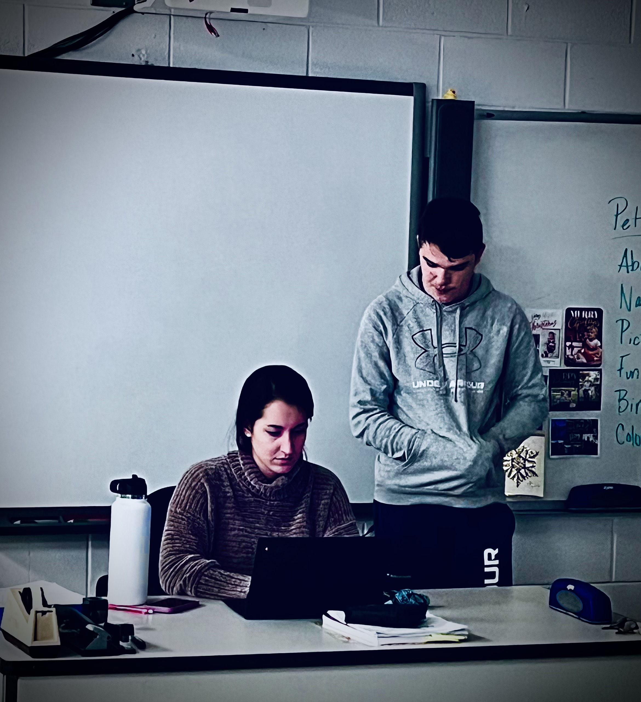
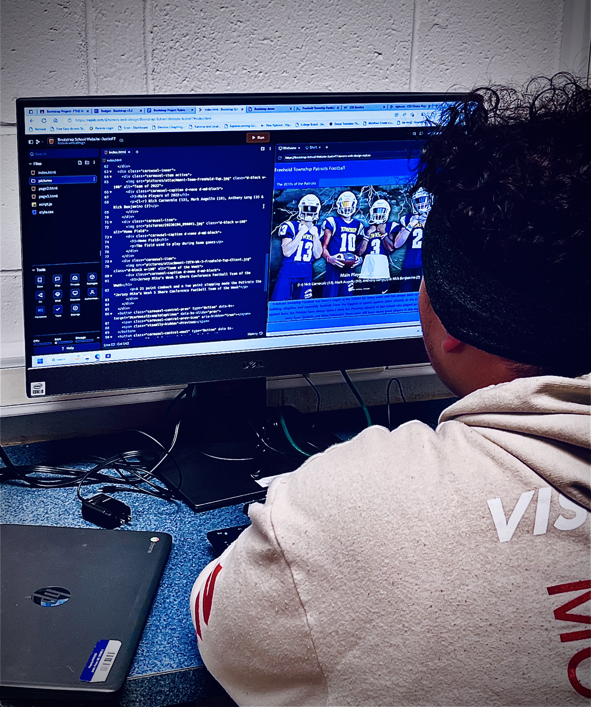

At freehold township high school, we have a program called Web design that allows students to open up their crative, technological, and problem-solving parts of themselves. We learn about the 3 main coding laungages used to make websites including, HTML(Hyper Text Markup Language), CSS(Cascading Style Sheets), and Java Script. We learn how to use letters, numbers, and symbols to make intricate and creative websites. We learn the importance of team work, problem solving, and focus. If you like the arts, being precise, numbers, or just creating something, Web design has something for you.
Look what we do!


Looks fun right? Not only are we being creative and having fun now; we're preparing for our future and the mass amount of opportunites this course can open our eyes to. FTHS teaches a colledge course in senior year that you can get credits from.